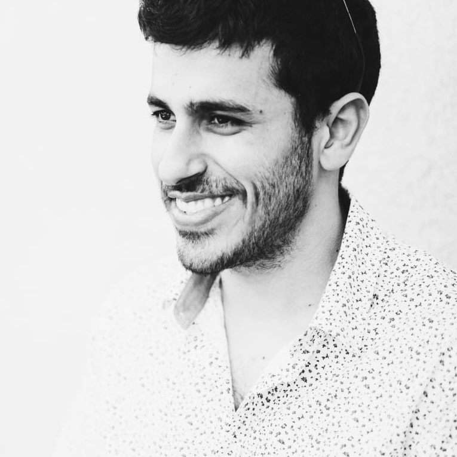
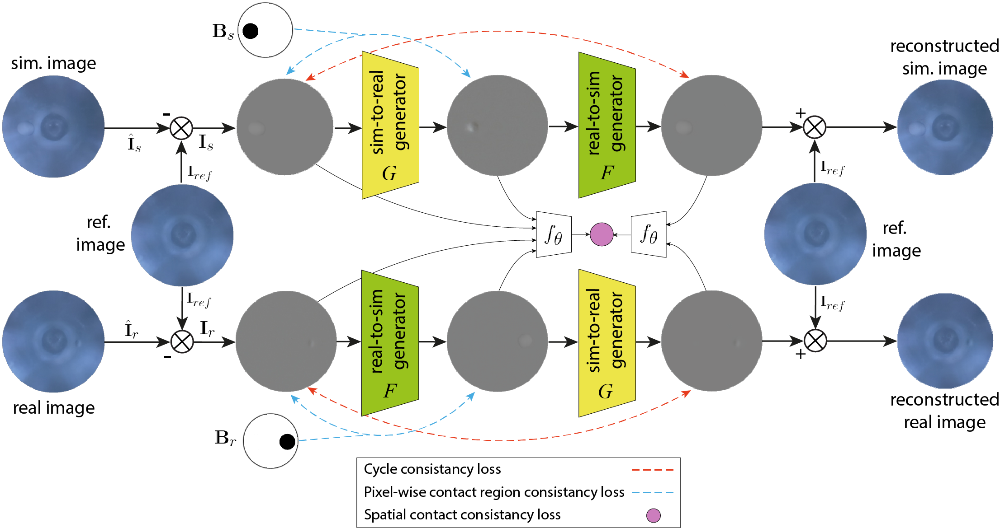
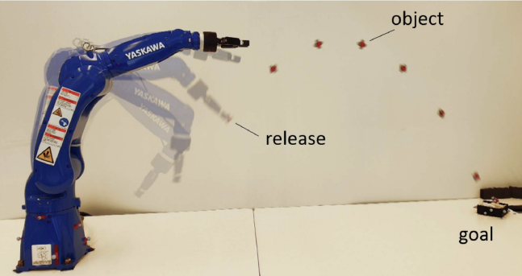
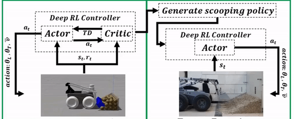

|
Osher Azulay I’m a Fulbright postdoctoral researcher at the University of Michigan, Ann Arbor, working with Prof. Stella Yu. My research focuses broadly on embodied intelligence, at the intersection of robotics, computer vision, and machine learning, with the goal of enabling reliable behavior under real-world variability. Previously, I earned my Ph.D. from Tel Aviv University in 2024, under the supervision of Dr. Avishai Sintov. My work focused on robot learning for manipulation, with an emphasis on leveraging multimodal signals for more adaptive interaction. |
 |

News
|
|
Selected PublicationsFull publication list on Google Scholar. |
|
|
Test-Time Motion Steering for Perceptive Humanoid Fall Recovery
Osher Azulay*, Cheng-Lin Hsieh*, and Stella Yu. In submission. * Equal contribution. project page Steers visually guided humanoid recovery toward a desired heading, rise timing, or path at test time. |
|
|
EgoIntercept: Egocentric Object Interception with a Quadruped Robot
Drew Scheffer, Osher Azulay, and Stella X. Yu. In submission. project page Learns egocentric object-motion prediction and locomotion to catch flying objects using only onboard RGB-D sensing. |
|

|
Unified Perceptive Fall Safety for Humanoids
Osher Azulay, Zhengjie Xu, Andrew Scheffer, and Stella X. Yu. Tech Report. project page / paper VIGOR unifies perceptive fall mitigation and stand-up recovery using sparse flat-ground demonstrations. |

|
Embodiment-Agnostic Navigation Policy Trained with Visual
Demonstrations
Nimrod Curtis*, Osher Azulay*, and Avishai Sintov. Tech Report. * Equal contribution. project page / paper / code / video Learns adaptive, collision-free motion from just a few visual demonstrations using diffusion. |
|
MOTORCYCLE 1.0: Automating Bimanual Cable Routing Around Fixtures on the NIST Task Board
Osher Azulay*, Kavish Kondap*, Jaimyn Drake*, Shuangyu Xie, Hui Li, Sachin Chitta, and Ken Goldberg. IEEE CASE, 2025. * Equal contribution. paper / video Coordinates two robot arms to route cables around fixtures while controlling slack. |
|

|
Visuotactile-Based Learning for Insertion with Compliant Hands
Osher Azulay, Dhruv Metha Ramesh, Nimrod Curtis and Avishai Sintov. IEEE RA-L & IROS, 2025. project page / paper / code Visuotactile policy learning for contact-rich insertion with zero-shot sim-to-real transfer. |

|
AllSight: A Low-Cost and High-Resolution Round Tactile Sensor with
Zero-Shot Learning Capability
Osher Azulay, Nimrod Curtis, Rotem Sokolovsky, Guy Levitski, Daniel Slomovik, Guy Lilling and Avishai Sintov. IEEE RA-L & ICRA, 2024. paper / code / video Introducing AllSight, an optical tactile sensor with a round 3D structure designed for robotic inhand manipulation tasks |
|
 |
Augmenting Tactile Simulators with Real-like and Zero-Shot
Capabilities
Osher Azulay*, Alon Mizrahi*, Nimrod Curtis* and Avishai Sintov. ICRA 2024. * Equal contribution. paper / code Bridges the sim-to-real gap for 3D shaped high-resolution tactile sensing using generative modeling. |

|
Haptic-Based and SE(3)-Aware Object Insertion Using Compliant Hands
Osher Azulay, Max Monastirsky and Avishai Sintov. IEEE RA-L & ICRA, 2023. paper / video Exploring complaint hands characteristics for object insertion using haptic-based residual RL. |
|
 |
Learning to Throw With a Handful of Samples Using Decision
Transformers
Max Monastirsky, Osher Azulay and Avishai Sintov. IEEE RA-L & IROS, 2023. paper / video Exploring the use of Decision Transformers for throwing and their ability for sim2real policy transfer. |
|
Learning Haptic-based Object Pose Estimation for In-hand Manipulation
Control with Underactuated Robotic Hands
Osher Azulay, Inbar Meir and Avishai Sintov. IEEE Transactions on Haptics, 2022. paper / code / video In-hand object pose estimation and manipulation using Model Predictive Control. |
|

|
Open-Sourcing Generative Models for Data-driven Robot Simulations
Eran Bamani, Osher Azulay, Anton Gurevich, and Avishai Sintov. Data-Centric AI workshop, NeurIPS, 2021 project page / paper Exploring the possibility of investing the recorded data in a generative model rather than directly to a regression model for real-robot applications. |
|
 |
Wheel Loader Scooping Controller Using Deep Reinforcement Learning
Osher Azulay and Amir Shapiro. IEEE Access, 2021 paper / code / video A deep reinforcement learning-based controller for an unmanned ground vehicle with a custom-built scooping mechanism. |
Teaching Experience
Template from source code. |
|